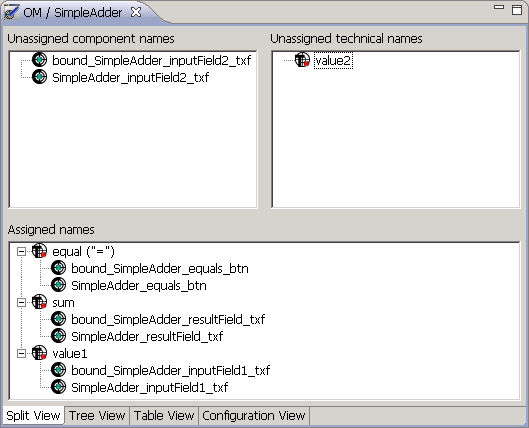
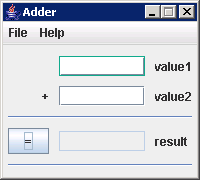

Once you have collected the components from the AUT that you will use during the test 3.18.4, you can then map them to the component names you used in your Test Cases .
- In the Object Mapping Editor , in the split view or the tree view 3.18.2.2, you will see the component names you have created 3.13.1 and/or used in your Test Cases , as well as the names you have collected from the AUT . The names are grouped into categories of unassigned and assigned names 3.18.2.3.
- To map a component name to a technical name, you must drag the unassigned component name onto the corresponding unassigned technical name that you want this component name to refer to.
- When a component name has been assigned to a techical name, the joined names appear in the assigned names category. The component type for the component name is adjusted so that it reflects the type of component it hasbeen mapped to 3.13.8.
![\includegraphics[height=2cm]{lightbulb}](img2.jpg) |
You can also ''unassign'' component names from technical names by dragging the component name back into the unassigned component names category |
- Save the changes in the editor.
|
You will only be able to map component names to technical names if their types are compatible 3.13.8. |
Figure 3.26: Object Mapping Editor
|

|
Figure 3.27: Green Border around Supported Component
|

|
Copyright BREDEX GmbH 2014. Made available under the Eclipse Public License v1.0.